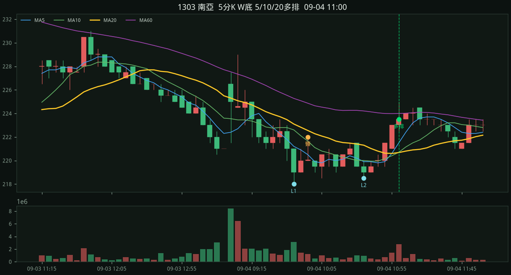
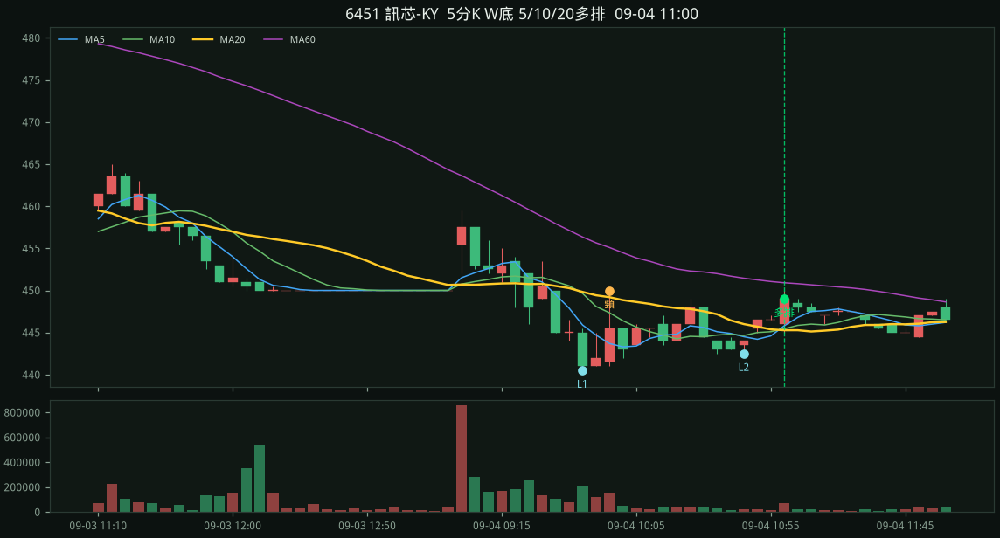
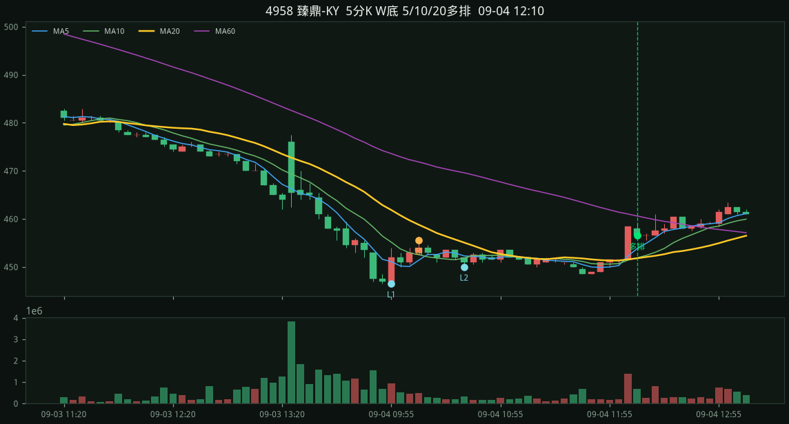
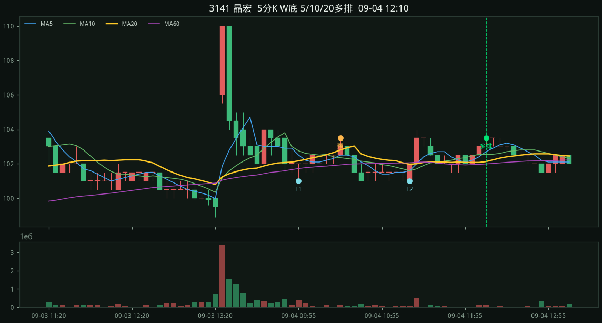

#1 · 1303 南亞2026-09-04 11:00
223.50
收盤 223.50 MA5 221.50 > MA10 220.70 > MA20 220.68 L1 218.00 / L2 218.50 / 頸線 222.00 停損 218.00 量度 226.00 彈回 2.52% 站上 1.28% 深度 1.83% 跌幅 5.96% 當日殺 5.05%

2026-09-04 · 15d · 股價<700 · 嚴格 · 掃描 100 檔
規則：五分 K 做出 W 底（先大跌、兩個相近低點），等五分 MA5>MA10>MA20 多頭排列才進場。
嚴格：同一天做出 W、09:15 後、當天五分圖先跌 ≥3.5%、回看出發高點跌 ≥5.5%、頸線深度 ≥1.25%、兩低點價差 ≤1.0%、第二腳不能更低、右腳從頸線回落 ≥1.0%、從低點彈回 1.1%～3.5%、收盤站上 MA20 ≥0.45%，且五分 MA5>MA10>MA20 多頭排列才進場。對齊國巨 515/515→11:50 多排、南亞科 480/482→11:55 多排。缺口後貼箱型打底（旺宏、華邦電那種）不算 W。開盤當根當 L1、頸線幾乎漲回殺勢起點（台虹那種 V）、或殺完貼著地板的淺箱（台勝科、台玻那種）也不算 W。瀑布殺完的小台階、第二腳更低的下階、第二低後橫很久才多排也不算。
09-04 1303 南亞、6451 訊芯-KY、4958 臻鼎-KY、3141 晶宏
收盤 223.50 MA5 221.50 > MA10 220.70 > MA20 220.68 L1 218.00 / L2 218.50 / 頸線 222.00 停損 218.00 量度 226.00 彈回 2.52% 站上 1.28% 深度 1.83% 跌幅 5.96% 當日殺 5.05%

收盤 449.00 MA5 445.80 > MA10 445.45 > MA20 445.27 L1 440.50 / L2 442.50 / 頸線 450.00 停損 440.50 量度 459.50 彈回 1.93% 站上 0.84% 深度 2.16% 跌幅 5.56% 當日殺 4.31%

收盤 456.50 MA5 453.80 > MA10 451.90 > MA20 451.80 L1 446.50 / L2 450.00 / 頸線 455.50 停損 446.50 量度 464.50 彈回 2.24% 站上 1.04% 深度 2.02% 跌幅 8.17% 當日殺 6.94%

收盤 103.50 MA5 102.70 > MA10 102.55 > MA20 102.12 L1 101.00 / L2 101.00 / 頸線 103.50 停損 101.00 量度 106.00 彈回 2.48% 站上 1.35% 深度 2.48% 跌幅 8.91% 當日殺 8.91%
